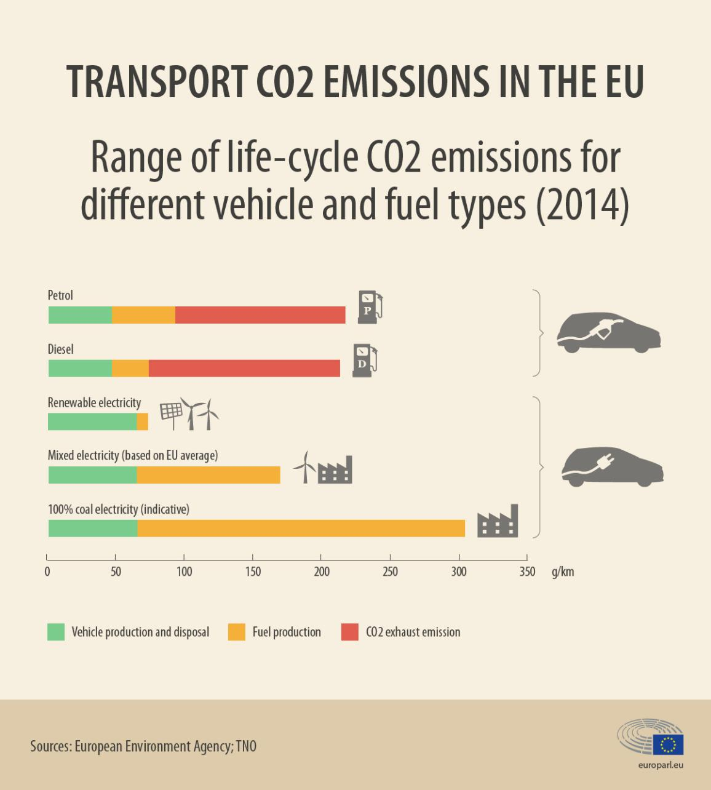
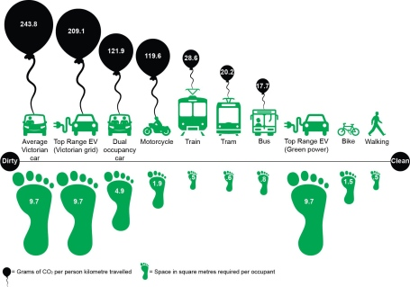

This blog is triggered by an email sent to me by Kobus Scheltema, a fellow ambassador at Global Impact Network. So Kobus has become the community manager of the network after Yoanna Koleva stepped down from that position earlier this year. And Kobus, like most other people in the network, is passionate about measuring the impact of the little things that the citizens of the world can do to extend the existence of life on this planet. The Global Impact Network (GIN) platform has been working on a social media application that can help citizens track their impact, and they base these measurements based on empirical data and proof of action, which is currently accepted as a photograph. And some of the ambassadors were concerned that there is no way to measure the impact of using more sustainable transportation on the app.
So Kobus wanted to get some input from my end regarding sustainable transportation, and I am summarizing my response in this blog because I believe that everyone should be aware of these facts.
I truly believe that this is not the case. I have seen these statistics from a lot of different, credible sources, and I will just add a link to one such source here. This image from the same article summarizes it well:
If you look at the bottom-most bar, it is clear that just the adoption of electric vehicles does nothing for the environment on its own (in fact, it makes things worse). And people mustn't stop using their ICE vehicles to adopt EVs because that will just cause more harm than good. EV should only be bought when you anyway would have bought a new vehicle.
I strongly support the use of public transport, and non-motor transport like walking and cycling, over the use of EVs. On a quick search of the web, I found this article. This is an image that summarizes the learnings from the same:
As you can see, walking and biking is a sure-shot method to reduce carbon footprint. With EVs, if you are 100% sure of the source to be green, then you still have a big initial manufacturing footprint (due to batteries) as mentioned in the previous section. And then, public transport, even if not running on green energy, is the next best thing you can do.
At least in India, a lot of the public transport, including the largest railway network in the world, and various major city metro-train networks and bus networks, run exclusively on electricity. So buying a private EV is clearly much worse than using these alternatives.
Have I missed out on any bit of information? Is my analysis faulty? I do change my own behaviour based on the information that I have shared above. And I would appreciate it if you can correct me wherever I am wrong. Additionally, I would also be glad to discuss this topic if you are interested in it. And maybe we can together start a ritual which helps us take better care of our planet.